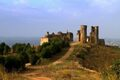
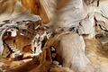
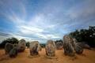
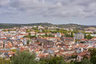
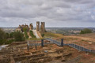
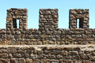
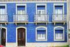

Multimédia
Nesta página apresento alguns conteúdos multimédia sobre a minha cidade, Montemor-o-Novo.
Fotografias







Vídeo
Vídeo sobre Montemor-o-Novo:
Nesta página apresento alguns conteúdos multimédia sobre a minha cidade, Montemor-o-Novo.







Vídeo sobre Montemor-o-Novo: